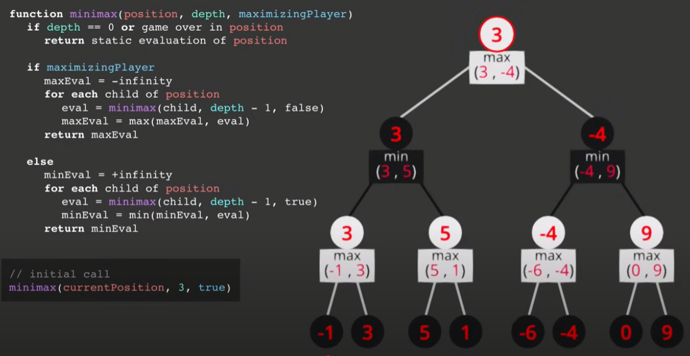
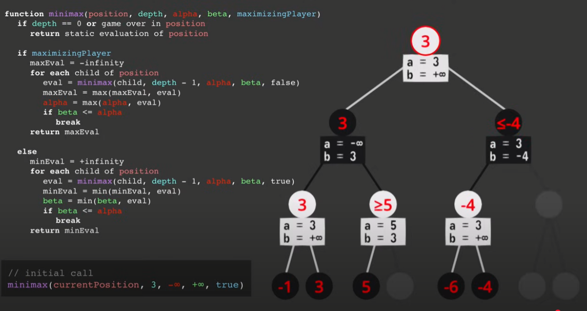

Adversariale Suche & Minimax¶
🎮 1️⃣ Spielbaum & Rollen¶
-
Spielbaum
- Jeder Knoten = eine Spielsituation.
- Kanten = mögliche Züge.
-
Max‑ vs. Min‑Knoten
- Max (unsere KI) will die Bewertung maximieren.
- Min (Gegner) will sie minimieren.
-
Blatt‑Bewertung
Tiefe erreicht oder Spielende → Heuristik liefert einen Zahlenwert \(E(s)\)
🤖 2️⃣ Minimax‑Verfahren¶
-
Rekursion
- Wechsle abwechselnd zwischen Max und Min, bis Tiefe 0 oder terminal.
-
Entscheidung
- Max nimmt
max(…)über alle Kinder‑Werte. - Min nimmt
min(…).
- Max nimmt
-
Komplexität
- Zeit: \(O(b^d)\) mit Verzweigungsfaktor \(b\) und Tiefe \(d\)
- Platz: \(O(d)\) (Rekursionstiefe)

📝 Zusammenfassung Minimax¶
| Begriff | Beschreibung |
|---|---|
| Max‑Knoten | wählt das größte Kind >>> |
| Min‑Knoten | wählt das kleinste Kind <<< |
| E(s) | Bewertungsfunktion an den „Blättern“ |
| Parameter | sss: Stellung, ddd: Tiefe, player∈{Max,Min}player\in{Max,Min}player∈{Max,Min} |
✂️ 3️⃣ Alpha‑Beta‑Pruning¶
-
α (Alpha)
- Beste bisher bekannte Bewertung für Max.
-
β (Beta)
- Beste bisher bekannte Bewertung für Min.
-
Pruning‑Kriterium
Sobald \(\beta \le \alpha\) gilt, kann der Rest des Teilbaums abgebrochen werden. -
Vorteil
Im besten Fall: \(O(b^{\frac{d}{2}})\) statt \(O(b^d)\)

function alphabeta(s, d, α, β, player):
if d=0 oder s terminal: return E(s)
if player=Max:
v = −∞
for Zug z:
v = max(v, alphabeta(s nach z, d−1, α, β, Min))
α = max(α, v)
if β ≤ α: break
return v
else:
v = +∞
for Zug z:
v = min(v, alphabeta(s nach z, d−1, α, β, Max))
β = min(β, v)
if β ≤ α: break
return v
📝 Kurzzusammenfassung αβ¶
| Symbol | Bedeutung |
|---|---|
| α | Max’s bisher beste Option (untere Schranke) |
| β | Min’s bisher beste Option (obere Schranke) |
| Pruning | Wenn β≤α\beta \le \alphaβ≤α, keine weitere Expansion nötig |
4. Heuristische Zugreihenfolge (Move Ordering)¶
Um Alpha‑Beta effektiver zu machen, sollten „gute“ Züge zuerst untersucht werden, damit Schnittkriterien früher greifen:
- Kaptur‑Züge: Züge, die einen Eroberungszug auslösen, oft hohe Bewertung → Priorität.
- Bonus‑Züge: Züge, die in die eigene Kalah enden und einen weiteren Zug erlauben.
- “Killer‑Moves”: Aus früheren Knoten gespeicherte besonders stark prunende Züge.
- Partial‑Evaluator: Kurze, schnelle Heuristik, um Züge vorab grob zu bewerten und zu sortieren.
Mit guter Zugreihenfolge nähert sich die Laufzeit \(O(b^\frac{d}{2})\)
im Durchschnitt an.